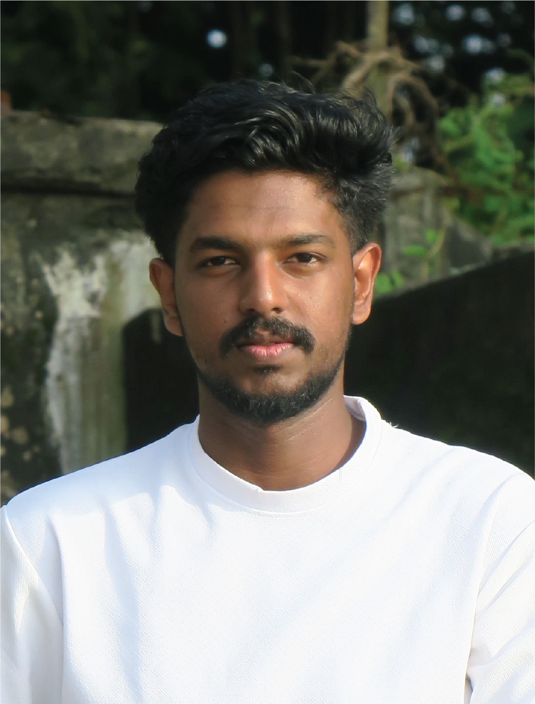
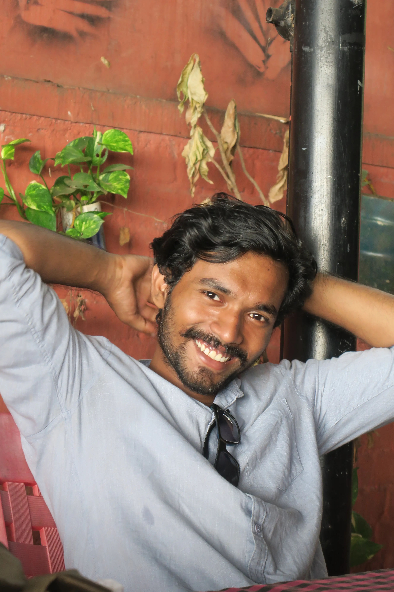
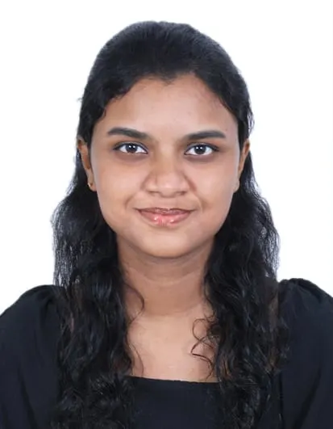
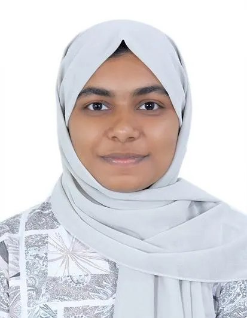
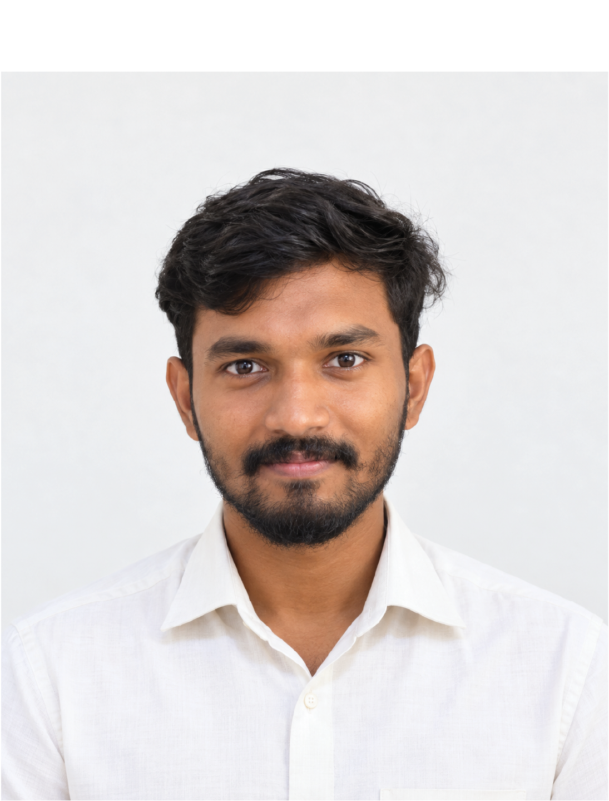

03
Meet Our Geotechnical Engineers
Meet the students of M.Tech Geotechnical Engineering — with their academic interests, research areas and professional profiles.

Research Interest: Foundation Engineering

Research Interest: Rock Mechanics

Research Interest: Ground Improvement
Research Interest: Geotechnical Earthquake Engineering

Research Interest: Numerical Modelling

Research Interest: Landslide Engineering

Research Interest: GIS & Data-Driven Geotechnics